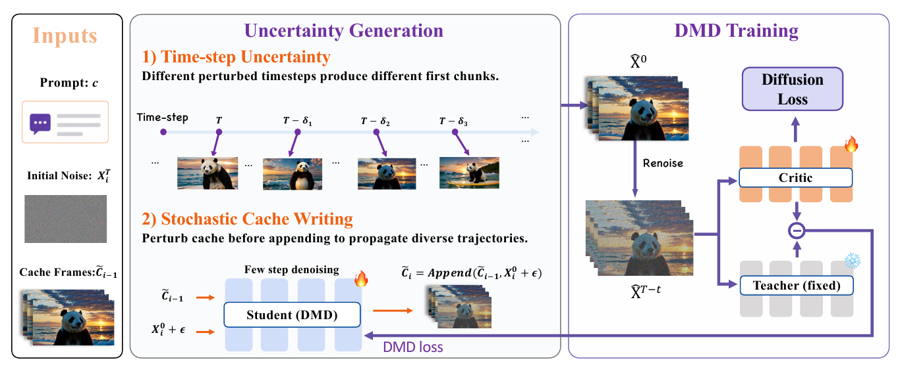

SIGGRAPH Asia 2026 Conference Papers
Uncertainty DMD
Restoring Diversity in Few-Step Autoregressive Video Distillation
Nanjing University · TeleAI · Fudan University
Recovering per-prompt diversity through structured uncertainty, while preserving comparable visual quality.
arXiv Explore the results ↓Video results
Diversity that persists over time
Each panel shows nine generations using the same prompt seeds across all methods. Compare scene layout, appearance, and motion. Only the selected prompt loads while you browse all nine examples.
Prompt 01 / 09
“Time lapse of sunrise on Mars”
Method
Uncertainty generation within DMD training
Uncertainty DMD adds two lightweight perturbations to the autoregressive distillation pipeline. The model architecture and the original DMD objective remain unchanged.

01
Time-step uncertainty
Perturbed denoising timesteps produce different first chunks from different noise seeds, restoring variation at the start of generation.
02
Stochastic cache writing
The cache is perturbed before each append operation so distinct generation trajectories continue across subsequent chunks.
Paper
Abstract
Few-step Distribution Matching Distillation enables efficient autoregressive video generation, but often maps different noise seeds to highly similar first chunks. The deterministic autoregressive cache then propagates this collapsed state, reducing sample diversity and motion dynamics.
We introduce Uncertainty DMD, a lightweight framework that injects structured uncertainty through first-chunk timestep perturbation and stochastic cache writing. The same perturbations apply during training and inference, require no architectural modifications, and recover diverse generation trajectories while preserving comparable visual quality.
Reference
Citation
@inproceedings{duan2026uncertainty,
title = {Uncertainty DMD: Restoring Diversity in Few-Step
Autoregressive Video Distillation},
author = {Duan, Zixuan and Xiang, Xunzhi and Chen, Yabo and
Zhang, Xin and Liu, Changhan and Huang, Haibin and
Zhang, Chi and Fan, Qi and Li, Xuelong},
year = {2026}
}